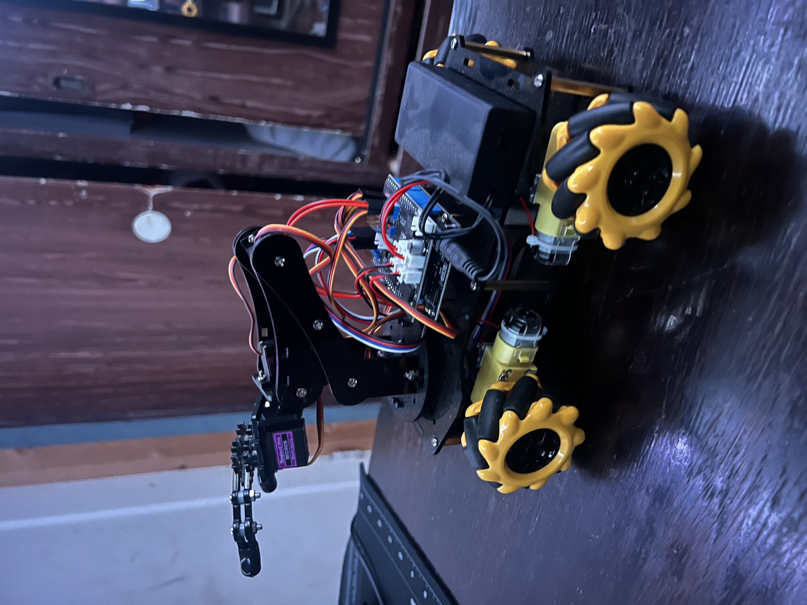

SecuredRobotArmCar
A personal robotics project combining a mobile robotic vehicle and robotic arm with a focus on the interaction between hardware, software, and security.
The project explores cyber-physical systems, embedded device control, and security considerations involved in communicating with and operating physical robotic devices.
Project Focus
- Robotic vehicle and arm integration
- Embedded systems and hardware control
- Device communication and command handling
- Cyber-physical security principles
Explores security principles relevant to robotic systems, including protecting device control interfaces, validating commands, and reducing risks from unauthorized control.